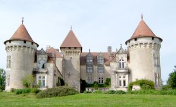
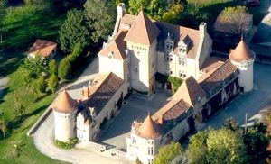
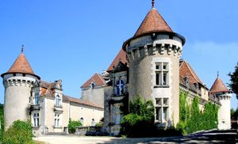
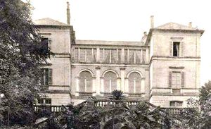
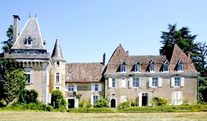
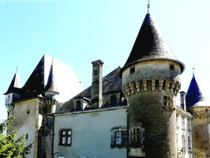
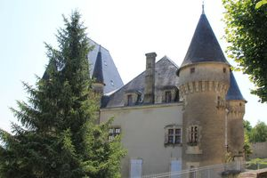
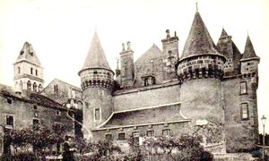
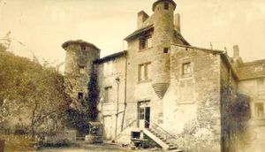

Recensement Jean-Claude Truffet
| Département | 24 — Dordogne |
| Canton | Thiviers |
| Commune | Thiviers |
| Type d'édifice | Château |
| Période d'origine | XIII-XV-XVII |
| Coordonnées GPS | 45° 25' 07" Nord, 0° 55' 20" Est Felolie grav 1 à 3 GPS : 45° 25' 07" Nord, 0° 55' 20" Est Vaucocour grav 6 - 7 GPS : 45° 24' 52" Nord, 0° 55' 19" Est. la maison de Theulier grav 4. |









A Thiviers le château de Banceil du XVIe et XVIIe siècles, transformé en logements, le château de la Filolie qui appartint au célèbre parfumeur François Coty, aujourd'hui école ménagère ; le château de Razac du XVIe siècle, et de Vaucocour. FILOLIE appartenait au XVe siècle aux Martin, puis au XVIe siècle aux Romagère de Roncessy, lesquels possédaient également, non loin de là, le manoir de La Cipière.
VAUCOCOURT, place forte au Moyen Âge, les origines de Thiviers seraient en fait beaucoup plus lointaines, A l'intérieur de la ville s'élève Vaucocourt dont les fondations sont du XIIIe siècle, qui firent construire le château du même nom et furent pendant des siècles les nobles et les dirigeants de la cité. La famille de Thiviers, disparue en 1729, était une branche directe de la famille de Vaucocourt. Cette dernière sest éteinte au début du XIXe siècle, mais reste représentée en filiation féminine par les du Mas de Veaucocourt. Château son aspect médiéval nest quasiment plus apparent à la suite de nombreuses rénovations au cours des siècles.
BANCEIL, doit être identifié comme le château de la Cour. En 1775, en effet, son propriétaire Pierre de Banceil, écuyer, est nommé seigneur de la Cour. Banceil est dabord transformé en gendarmerie, avant daccueillir des logements sociaux.
RAZAC, ancien fief des Tenant, puis des Truard et les Vigneral qui le possèdent toujours.
La FILOLIE, un haut logis édifié au XVe siècle, accosté d'une tour carrée à mâchicoulis, lance deux ailes du XVIIe siècle en équerre, toutes les deux terminées par des tours circulaires. Un châtelet s'ouvre au levant et donne accès à la cour d'honneur. Un chemin de ronde accentue la note féodale de cette demeure.
VAUCOCOURT, au XIIe siècle, inclus dans l'enceinte de la ville est bâti à l'est de la cité, se situe en pleine ville de Thiviers. Lors du passage des huguenots en 1575, le château comme les remparts de la ville sont détruits , le château actuel est reconstruit à la fin du XVIe siècle. BANCEIL, la construction date du XVIe au XVIIe siècle, a été transformé en logements privés. Il est fermé au public. Au Moyen-Âge, la demeure semble constituer une résidence seigneuriale périurbaine. Le château comprend un logis flanqué dune tour cylindrique et orné dune échauguette, lédifice est complètement restauré. Son style architectural date du XVIe siècle bien que sa construction soit antérieure à cette date sans doute dorigine médiévale.
THIVIERS, une autre famille est étroitement liée à Thiviers : la famille Theulier. Ses origines thibériennes remontent au moins au XVIIe siècle : un M. Theulier fut nommé consul de la ville en 1608. Depuis 1922, la maison de la famille est devenue la mairie et ses terrains adjacents, le parc Theulier. RAZAC est composé de deux parties d'époques différentes, la plus ancienne du XVIIe siècle, possède une tour carrée à mâchicoulis à laquelle est accolée une tour ronde, l'autre partie du XVIIIe siècle est un corps de logis à trois niveaux avec étage de combles percé de lucarnes.
Famille de Romagère de Roncessy famille de Thiviers Pierre de Banceil fief des Tenant
"
Banceil-Razac Grav 5 et 9 GPS : 45° 25' 07" Nord, 0° 55' 20" Est Felolie grav 1 à 3 GPS : 45° 25' 07" Nord, 0° 55' 20" Est Vaucocour grav 6 - 7 GPS : 45° 24' 52" Nord, 0° 55' 19" Est. la maison de Theulier grav 4.